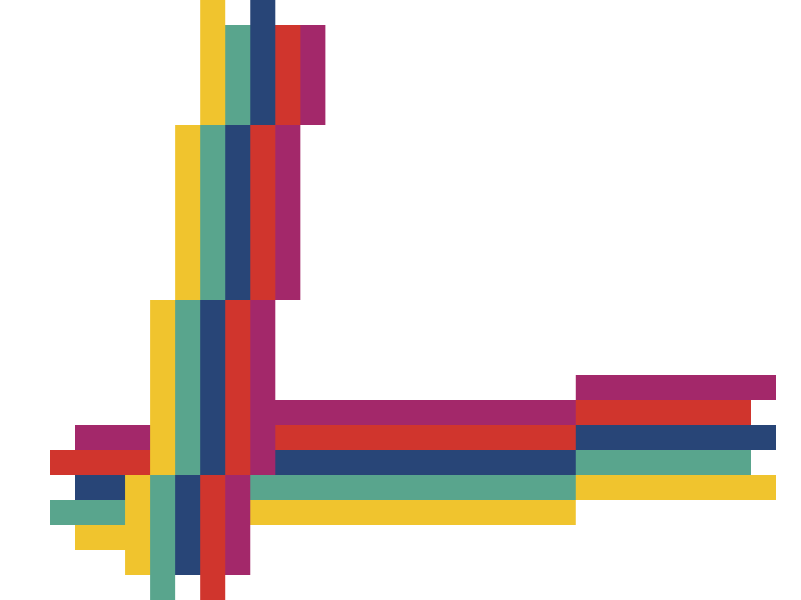

The Short & Simple

Third Year Software Engineering Student
Currently studying at York University's Lassonde School of Engineering with an 8.0 GPA with involvement in a variety of extra curriculars
Ex Canadian Air Force Officer
Experience in the Aviation Industry, along with the knowledge and insight that comes with Military Training

Lassonde Scholar
Among one of 2017's recipients of Lassonde's most prestigious scholarship. Chosen from Lassonde's student body for demonstrating the traits of a true Reniassance Engineer
Experience in Web Development
Singlehandedly managed all 5 of MonstrARTity's websites for the summer of 2018 using HTML, CSS, JavaScript and Wordpress